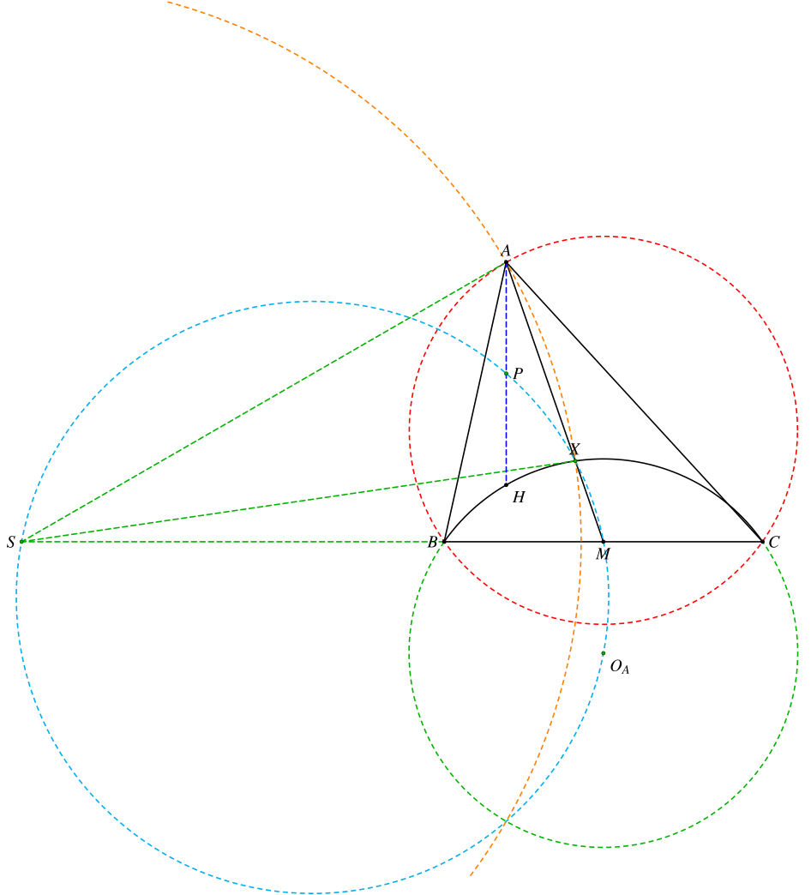
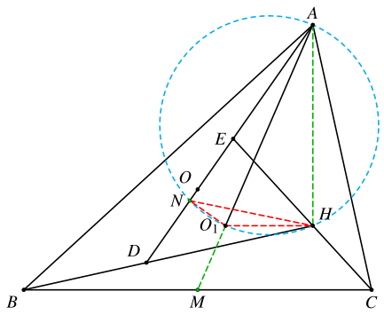
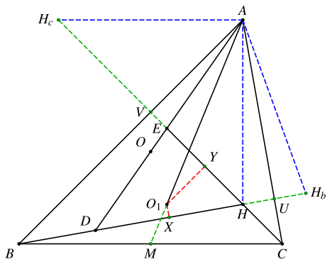
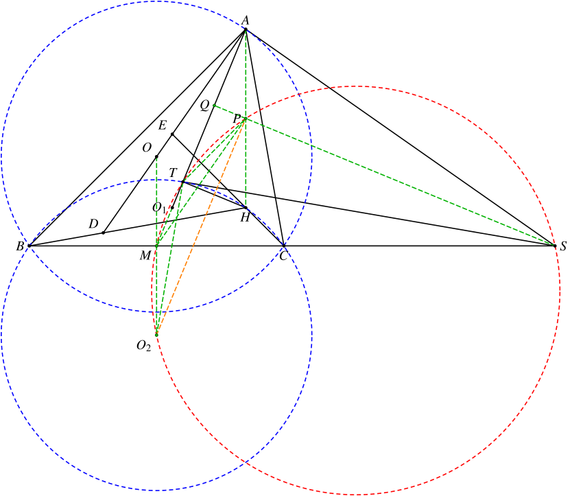
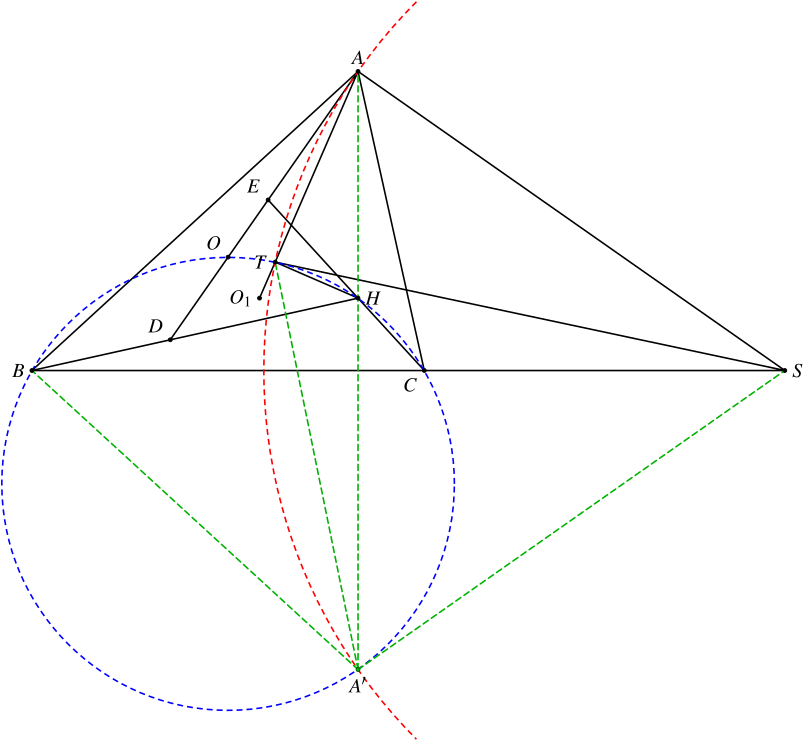

1. 题目
如图，在锐角 △ABC 中，AB>BC>AC，O 为外心，H 为垂心。设直线 AO 分别与直线 BH、CH 交于点 D、E，记 △DEH 的外心为 O1，线段 AO1 上一点 T 满足 B、T、H、C 四点共圆，BC 延长线上一点 S 满足 SA=ST。
证明：∠STH=∠OAO1。
2. 分析
这又是一道典型的和「Humpty点」相关的题目。在之前的文章中，我们介绍了一些Humpty点相关的常见结论，基本上都和两个垂足相关。除此之外，还有如下结论：
设点 X 为 △ABC 的A-Humpty点。过点 A 作 △ABC 的外接圆的切线交直线 BC 于 S，则：
- △ASM 的垂心为 AH 的中点，记为点 P。
- SX 是 △BHC 的外接圆的切线。
- S、P、X、M 共圆。
- 点 X 在 △ABC 的A-Apollonius圆上，点 S 为其圆心。

显然，在本题中，点 T 就是 △ABC 的A-Humpty点。
因此，本题可以拆成两部分，先证明直线 AO1 经过 BC 中点，接下来再证明Humpty点的性质即可。
3. 解答
3.1. 步骤一：证明Humpty点
设 M 为 BC 中点。我们证明 A、O1、M 共线。
3.1.1. 方法一
设 ∠BAC=α，∠ABC=β，∠BCA=γ。注意到
∠EDH=∠ABD+∠BAD=(90∘−α)+(90∘−γ)=β
同理可知，∠DEH=γ，因此 △ABC∼△HDE。于是有
∠EHO1=90∘−β=∠BCH⟹O1H∥BC⟹O1H⊥AH

取 DE 中点 N，则 O1N⊥DE，因此 A、N、O1、H 共圆，可知
∠NAO1=∠NHO1=∠MAO
可知 A、O1、M 共线。
当然也可以硬算
设相似比 k=ACEH，则由
sin(α−(90∘−γ))CE=sin(180∘−γ)ACcosγCH=sinγAB⟹CE=AC⋅sinγcosβ⟹CH=AB⋅sinγcosγ
可知
k=ACCE−CH=sinγcosβ−sinβsinγ⋅sinγcosγ=sinγsinβsinβcosβ−sinγcosγ=2sinγsinβsin2β−sin2γ=sinγsinβcos(β+γ)sin(β−γ)=sinγsinβcosαsin(γ−β)
由 O1 是 △DEH 的外心可知
2O1H=sinαDE
因此
tan∠O1AH=AHO1H=sinαBC⋅cosα2sinαDE=2cosαk=2sinγsinβsin(γ−β)
而
tan∠MAH=ABsinβABcosβ−21BC=2sinγsinβ2sinγcosβ−sinα=2sinγsinβ2sinγcosβ−sin(β+γ)=2sinγsinβsin(γ−β)
因此 tan∠O1AH=tan∠MAH，可知 A、O1、M 共线。
3.1.2. 方法二：面积法
易知 △ABC∼∠HDE。
分别取 DH、EH 的中点 X、Y，由 O1 是 △DEH 的外心可知
O1X⊥DHO1Y⊥EH⟹O1X∥AC⟹O1Y∥AB

设 U=BH∩AC，V=CH∩AB，则
M∈AO1⟸[O1AB]=[O1AC]⟸AB⋅YV=AC⋅XU⟸YVXU=ACAB
分别作点 H 关于 AB 和 AC 的对称点 Hc、Hb，则 AHb=AHc=AH。易知
△ADHb∼△ABC△AHcE∼△ABC⟹BCDHb=ACAHb⟹BCHcE=ABAHc⎭⎬⎫⟹HcEDHb=ACAB
又 DHb=2XU，EHc=2YV，因此结论成立。
3.2. 步骤二：证明Humpty点的性质
由步骤一可知，点 T 为 A-Humpty 点，因此 ∠ATH=90∘。
设 P 为 AH 中点，则 AP=TP。设 Q 为 AT 中点，则 S、P、Q 共线。注意到 SQ⊥AM，AH⊥MS，可知点 P 是 △AMS 的垂心。因此
∠AMP=∠ASP=∠TSP
可知 T、M、S、P 共圆。

设 △BHC 的外心为 O2。注意到 △ABC 的外接圆和 △HBC 的外接圆半径相等，因此四边形 OBO2C 为菱形，O2M=OM=21AH=AP，可知四边形 O2MAP 为平行四边形，故
∠MO2P=∠MAP=∠MSP
可知 M、O2、S、P 共圆。因此 T、M、O2、S、P 共圆。
故 ∠O2TS=∠O2MS=90∘，可知 ST 为 △HBC 的外接圆的切线。于是
SB⋅SC=ST2=SA2
可知 SA 为 △ABC 的外接圆的切线，因此 ∠OAS=90∘。于是
∠STH=90∘−∠STA=90∘−∠SAT=∠OAO1
4. 另一个解答
实际上，这个题不用Humpty点也能够做出来。
设 A 关于 BC 的对称点为 A′，则 SA=ST=SA′。

注意到
∠STH=∠STA′−∠HTA′=∠STA−∠HBA′=(90∘−21∠TSA′)−(β+90∘−γ)=γ−β−21∠TSA′
而
∠OAO1=∠OAH−∠O1AH=(α−2(90∘−γ))−21∠TSA′=α+2γ−180∘−21∠TSA′=γ−β−21∠TSA′
因此 ∠STH=∠OAO1。